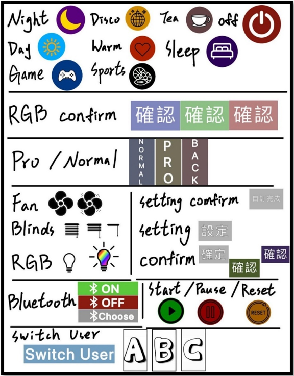

一鍵控制
在手機上只需要一鍵即可控制一切家電，不須另行設定各項家電數 值能最大限度地減少操作時動用手指肌肉的時間，有效提高使用者操作 此系統之便利性。
簡易理解
最簡單及最直觀且按鍵明顯的操作方式，在介面上的按鍵大小，會 依照手機尺寸大小等比例放大或縮小，盡可能地減少失真的問題。情境 及啟動關閉之說明以圖替代文字，能夠更加簡單的去理解此情境之功用 為何，就像是月亮代表夜晚(如右圖所示)，只要輕輕觸碰一下，家電就能 運作。不必消耗過多腦力讀文字，對於中老年人、視力不好的使用者為 一大福音。
